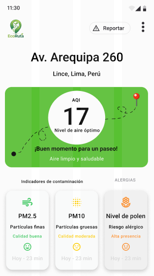

Mapa de Calor en Tiempo Real
Calidad del aire en Lima cuadra por cuadra. Datos en tiempo real de SENAMHI y vecinos.
Descubre rutas más seguras y saludables con información sobre calidad del aire en tiempo real
Descargar AppConsulta rutas saludables en tiempo real

Planifica tus actividades al aire libre consultando el pronóstico por horas
Aire limpio y saludable
Ideal para actividades al aire libre
Entre las 19:00 y 20:00 se prevé un incremento del AQI. Procura salir antes de las 18:00 o después de las 21:00.
Se muestran los últimos datos disponibles. Los valores podrían no reflejar las condiciones actuales.
Así te acompaña la app a lo largo del día
El sistema muestra niveles bajos de contaminación y resalta este como el mejor momento para salir.
AQI 17 · ExcelenteEl sistema detecta alta contaminación y recomienda evitar actividades físicas en este periodo.
AQI 51 · PrecauciónSin internet, la app muestra la última información disponible y advierte que puede estar desactualizada.
Última actualización: 10:45Todo lo que necesitas para respirar mejor en la ciudad
Una plataforma colaborativa que pone la salud respiratoria primero
Calidad del aire en Lima cuadra por cuadra. Datos en tiempo real de SENAMHI y vecinos.
Rutas que priorizan aire limpio sobre velocidad. Ideal para deportistas y personas sensibles.
Alertas de contaminación en tu ruta. Te avisamos sobre incendios u obras para que cambies de camino a tiempo.
Reporta incidentes y mejora el mapa. Información hiperlocal en tiempo real donde los sensores oficiales no llegan.
Personaliza tu protección. Dinos tu sensibilidad y adaptaremos las rutas y alertas a tus necesidades.
Planifica tu semana con el historial del aire. Compara tendencias y descarga reportes detallados.
Encuentra tu ruta más saludable en solo 3 pasos.
Ingresa tu ubicación y destino para encontrar las rutas más saludables disponibles
Compara rutas según contaminación, tráfico y calidad ambiental en tiempo real
Sigue la ruta recomendada y reduce tu exposición a zonas contaminadas
Faltan 300 ptos para desbloquear tu próximo beneficio
1 hora bicicleta pública gratis
500 pts. EcoDescuento en mantenimiento básico
800 pts. EcoDescuento en corredor o metropolitano
800 pts. EcoDescuento en bebidas saludables
950 pts. EcoConecta con otros usuarios, comparte zonas contaminadas, reporta incidentes y ayuda a construir rutas más seguras y saludables para todos.
Ayuda reportando contaminación en tu zona
Reportar ahora →Descubre recomendaciones de otros usuarios
Explorar comunidad →Recibe avisos para cuidar tu salud
Activar alertas →Gracias a EcoRuta encontré rutas más limpias para correr
La app me ayuda a llevar a mis hijos por rutas más seguras y saludables
Reportar zonas contaminadas es muy fácil y sé que estoy ayudando a otros usuarios.